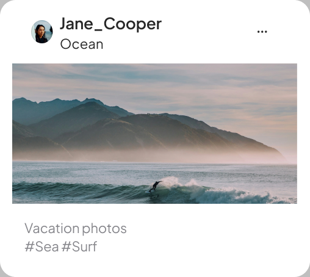
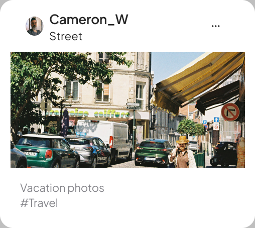
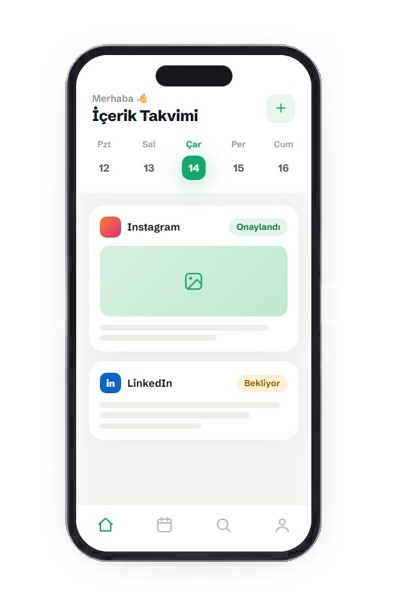

Marka odaklı üretim
Marka profili, hedef kitle ve iletişim tonunu kullanarak metin ve görsel önerileri oluştur.
Markanın diline uygun metin ve görseller üret.
Planla, düzenle, onayla; sosyal medya içeriklerini tek bir yerden yönet.



İçerik takvimi · tasarım önizlemesiKüçük işletmeler ve sosyal medya ekipleri için içerik üretimini, planlamayı ve onayı bir araya getirir.
Marka profili, hedef kitle ve iletişim tonunu kullanarak metin ve görsel önerileri oluştur.
AI çıktısını incele, düzenle, yeniden üret veya onayla. İnsan değerlendirmesi akışın bir parçası.
Fikirleri konulara dönüştür; yayın ritmini, platform hedeflerini ve içerik planını yönet.
Sosyal hesap bağlantıları, yayın kayıtları ve performans verilerini ortak bir iş akışında takip et.
Marka bilgilerini, hedef kitleni ve içerik konunu belirle.
Strateji, metin ve tasarım ajanları bağlamı içerik önerisine dönüştürsün.
Metni ve görseli düzenle, geri bildirim ver veya yeniden üret.
İçeriklerini platformlara göre yönet; yayın ve performans kayıtlarını izle.
LangGraph, üretimi tek bir uzun istem yerine ayrı görevleri olan ajanlarla yürütür. Geçmiş beğeni ve geri bildirim örnekleri marka bağlamını zenginleştirir.